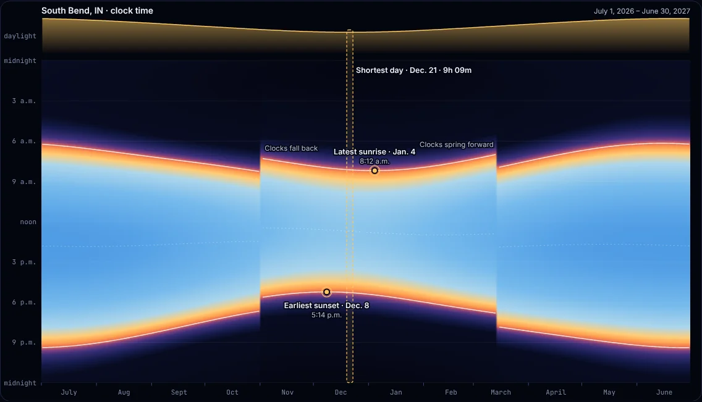

On the shortest day of the year, Dec. 21, 2026, daylight in the Lower 48 runs from 8h 26m in Seattle to 10h 32m in Miami, and from 3h 41m in Fairbanks, Alaska, to 10h 50m in Honolulu. Yet the earliest sunset comes days or weeks before the shortest day (Dec. 8 in New York and Chicago), and the latest sunrise comes weeks after. North of about 67.4° latitude the sun doesn’t rise at all around the December solstice: 48 days in Tromsø, Norway, and 112 in Longyearbyen, Svalbard.
The chart below holds a whole year of daylight, twilight and night. Each column is a day, each row is a minute, and each pixel is colored by where the sun was at that moment. Pick any of 65 places, from Utqiaġvik, Alaska, to Singapore, or any latitude; it’s all calculated live in your browser.
By Shawn Nafziger · Published · Figures for July 2026–June 2027, from NOAA solar equations
Anywhere
1 of 5
What does a year of daylight look like?
In South Bend, IN, daylight runs from 9h 09m on the shortest day to 15h 12m on the longest.In , the sun doesn’t rise at all for in winter, and doesn’t set for in summer. In the chart, days run left to right (July to June) and the clock runs top to bottom, midnight to midnight. Deep blue is night, purple and orange are twilight, pale blue is full daylight. The green dot is right now; hover anywhere to read the sun’s height at that minute.
2 of 5
How short does the shortest day get?
In , there’s no shortest day to measure: the sun stays below the horizon from to , and twilight is the only light. The gold strip above the chart traces day length all year; the flat stretch at zero is the polar night.
In the Northern Hemisphere it’s Dec. 21, 2026, the winter solstice.South Bend, IN gets 9h 09m of daylight on Dec. 21, against 15h 12m on June 21. The gold strip above the chart traces day length all year; the shortest day is its lowest point.
3 of 5
Why isn’t the earliest sunset on the shortest day?
Because clocks and the sun keep different time. In South Bend, IN, the earliest sunset is Dec. 8 (5:14 p.m.), 13 days before the shortest day, and the latest sunrise isn’t until Jan. 4 (8:12 a.m.). Around the solstice the day barely changes length, but solar noon, the moment the sun is highest, drifts about half a minute later each day, so the whole band of daylight slides later on the clock.
Here the sun doesn’t rise at all around the solstice, so there’s no earliest sunset to find. Pick a place farther from the pole to see the lopsided edges.
4 of 5
Is the lopsided sunset the sun or the clock?
The clock. On sun time, where noon is reset each day to the moment the sun is highest, the light becomes a perfect mirror around noon, the daylight-saving steps vanish, and the earliest sunset and latest sunrise both land on the shortest day. Over a year the sun runs up to 16 minutes ahead of or behind clock time; astronomers call that drift the equation of time.
5 of 5
Where can the polar night be seen?
Only north of about 67.4°N or south of about 67.4°S, a little beyond the Arctic and Antarctic Circles, because the atmosphere bends sunlight over the horizon. There the sun doesn’t rise at all around the winter solstice: 48 days in Tromsø, Norway (Nov. 28–Jan. 14), and 112 in Longyearbyen, Svalbard (Oct. 27–Feb. 15). Fairbanks, Alaska, still gets 3h 41m on Dec. 21; Utqiaġvik, the northernmost town in the US, goes 65 days without a sunrise. The animation sweeps from the equator, where every day is about 12 hours, to 78°N; drag the Anywhere slider to try any latitude.

NightTwilightGoldenDaySun high
White lines: sunrise and sunset · dotted: sun at its highest · green: today and now
The sun right now
—
Today’s daylight
—
Change since yesterday
—
Next solstice
—
Shortest day, earliest sunset and polar night in 30 places
Every place here north of the equator that sees the sun in December gets its shortest day on Dec. 21 or 22, 2026, but its earliest sunset and latest sunrise land days or weeks to either side. The closer to the equator, the wider the gap: 25 days before the solstice in Honolulu, 3 in Fairbanks. Southern places are shown for their June 2027 winter.
Clock times, July 2026–June 2027 (southern places: 2027). Daylight is sunrise to sunset.
Place
Shortest day
Daylight
Earliest sunset
Latest sunrise
Longest day
Utqiaġvik, AK
Polar night: no sunrise Nov. 19–Jan. 22 (65 days)
Midnight sun
Fairbanks, AK
Dec. 21
3h 41m
Dec. 18, 2:39 p.m.
Dec. 24, 10:59 a.m.
21h 50m
Anchorage, AK
Dec. 21
5h 27m
Dec. 16, 3:40 p.m.
Dec. 26, 10:16 a.m.
19h 22m
Seattle, WA
Dec. 21
8h 26m
Dec. 10, 4:18 p.m.
Jan. 1, 7:58 a.m.
15h 59m
Minneapolis, MN
Dec. 21
8h 46m
Dec. 9, 4:31 p.m.
Jan. 2, 7:51 a.m.
15h 37m
Boston, MA
Dec. 21
9h 05m
Dec. 8, 4:11 p.m.
Jan. 3, 7:14 a.m.
15h 17m
Detroit, MI
Dec. 21
9h 05m
Dec. 8, 5:00 p.m.
Jan. 3, 8:01 a.m.
15h 17m
Chicago, IL
Dec. 21
9h 08m
Dec. 8, 4:19 p.m.
Jan. 3, 7:18 a.m.
15h 14m
South Bend, IN
Dec. 21
9h 09m
Dec. 8, 5:14 p.m.
Jan. 4, 8:12 a.m.
15h 12m
New York, NY
Dec. 21
9h 15m
Dec. 8, 4:28 p.m.
Jan. 4, 7:20 a.m.
15h 06m
Indianapolis, IN
Dec. 21
9h 21m
Dec. 7, 5:20 p.m.
Jan. 4, 8:06 a.m.
14h 59m
Denver, CO
Dec. 21
9h 21m
Dec. 7, 4:35 p.m.
Jan. 4, 7:21 a.m.
14h 59m
Washington, DC
Dec. 21
9h 26m
Dec. 7, 4:46 p.m.
Jan. 5, 7:27 a.m.
14h 54m
San Francisco, CA
Dec. 21
9h 33m
Dec. 6, 4:51 p.m.
Jan. 5, 7:25 a.m.
14h 47m
Atlanta, GA
Dec. 21
9h 55m
Dec. 4, 5:29 p.m.
Jan. 8, 7:43 a.m.
14h 24m
Phoenix, AZ
Dec. 21
9h 56m
Dec. 4, 5:20 p.m.
Jan. 8, 7:33 a.m.
14h 22m
Los Angeles, CA
Dec. 21
9h 53m
Dec. 4, 4:43 p.m.
Jan. 7, 6:59 a.m.
14h 26m
Dallas, TX
Dec. 21
10h 00m
Dec. 4, 5:21 p.m.
Jan. 8, 7:30 a.m.
14h 19m
Houston, TX
Dec. 21
10h 14m
Dec. 2, 5:22 p.m.
Jan. 10, 7:18 a.m.
14h 04m
Miami, FL
Dec. 21
10h 32m
Nov. 29, 5:29 p.m.
Jan. 13, 7:09 a.m.
13h 45m
Honolulu, HI
Dec. 21
10h 50m
Nov. 26, 5:48 p.m.
Jan. 16, 7:12 a.m.
13h 26m
Longyearbyen, Svalbard
Polar night: no sunrise Oct. 27–Feb. 15 (112 days)
Midnight sun
Tromsø, Norway
Polar night: no sunrise Nov. 28–Jan. 14 (48 days)
Midnight sun
Reykjavík, Iceland
Dec. 21
4h 07m
Dec. 18, 3:29 p.m.
Dec. 25, 11:23 a.m.
21h 09m
London, UK
Dec. 21
7h 50m
Dec. 12, 3:51 p.m.
Dec. 30, 8:06 a.m.
16h 38m
Madrid, Spain
Dec. 21
9h 17m
Dec. 8, 5:48 p.m.
Jan. 4, 8:38 a.m.
15h 04m
Tokyo, Japan
Dec. 22
9h 45m
Dec. 6, 4:28 p.m.
Jan. 7, 6:52 a.m.
14h 35m
Singapore
Dec. 21
12h 03m
Nov. 5, 6:50 p.m.
Feb. 10, 7:17 a.m.
12h 12m
Sydney, Australia
June 22
9h 54m
June 12, 4:53 p.m.
July 1, 7:01 a.m.
14h 25m
Ushuaia, Argentina
June 21
7h 12m
June 17, 5:11 p.m.
June 25, 9:59 a.m.
17h 20m
How many hours of daylight does Alaska get?
Anywhere from none to 24, depending on where and when. On Dec. 21, 2026, Juneau gets 6h 22m of daylight, Anchorage 5h 27m and Fairbanks 3h 41m, while in Utqiaġvik the sun doesn’t rise at all from Nov. 19 to Jan. 22. Around the June solstice it flips: Fairbanks gets 21h 50m, Anchorage 19h 22m, and Utqiaġvik’s sun doesn’t set from May 11 to Aug. 1, 2027. Twice a year, near the equinoxes, all four get about 12 hours.
Daylight (sunrise to sunset) on the 21st of each month. 0h: the sun doesn’t rise; 24h: it doesn’t set.
Date
Utqiaġvik
Fairbanks
Anchorage
Juneau
July 21, 2026
24h
19h 25m
18h 00m
17h 12m
Aug. 21, 2026
17h 34m
15h 51m
15h 15m
14h 53m
Sept. 21, 2026
12h 31m
12h 23m
12h 20m
12h 18m
Oct. 21, 2026
7h 47m
9h 03m
9h 30m
9h 48m
Nov. 21, 2026
0h
5h 38m
6h 46m
7h 27m
Dec. 21, 2026
0h
3h 41m
5h 27m
6h 22m
Jan. 21, 2027
0h
5h 45m
6h 52m
7h 31m
Feb. 21, 2027
8h 03m
9h 13m
9h 39m
9h 55m
March 21, 2027
12h 31m
12h 23m
12h 20m
12h 18m
April 21, 2027
17h 40m
15h 54m
15h 18m
14h 55m
May 21, 2027
24h
19h 23m
17h 59m
17h 11m
June 21, 2027
24h
21h 50m
19h 22m
18h 17m
How to read the chart
The bright shape in the middle is daylight. Where it pinches in, the days are short; where it swells, they’re long. Its top edge is sunrise and its bottom edge is sunset, so a dip in the bottom edge means an earlier sunset. The purple and orange fringes are twilight, which lasts much longer the farther you are from the equator.
Clock time is what your phone says, including daylight saving time (the sudden step in spring and fall). Sun time resets noon to the moment the sun is highest, which strips out time zones, daylight saving and the sun’s own drift. Flip between them to see how much of the picture is the clock rather than the sky.
The numbers for South Bend, IN, month by month
Date
Sunrise
Sunset
Daylight
July 1, 2026
6:14 a.m.
9:23 p.m.
15h 09m
Aug. 1, 2026
6:39 a.m.
9:03 p.m.
14h 23m
Sept. 1, 2026
7:11 a.m.
8:18 p.m.
13h 07m
Oct. 1, 2026
7:42 a.m.
7:27 p.m.
11h 45m
Nov. 1, 2026
7:17 a.m.
5:39 p.m.
10h 22m
Dec. 1, 2026
7:53 a.m.
5:15 p.m.
9h 23m
Dec. 21, 2026 · shortest
8:09 a.m.
5:18 p.m.
9h 09m
Jan. 1, 2027
8:12 a.m.
5:25 p.m.
9h 13m
Feb. 1, 2027
7:57 a.m.
6:00 p.m.
10h 03m
March 1, 2027
7:20 a.m.
6:35 p.m.
11h 15m
April 1, 2027
7:28 a.m.
8:10 p.m.
12h 42m
May 1, 2027
6:42 a.m.
8:43 p.m.
14h 01m
June 1, 2027
6:13 a.m.
9:13 p.m.
15h 00m
How this is calculated
Every pixel is computed in your browser from NOAA’s solar position equations (based on Jean Meeus’s Astronomical Algorithms): the sun’s declination and the equation of time for each day, then its height above the horizon for each minute. Sunrise and sunset are when the top of the sun meets a flat horizon, with normal atmospheric refraction; hills and buildings can shift what you see by a few minutes. The same equations, checked against an independent library, agree to within seconds for US cities.
Clock times use each place’s official time zone rules from your browser, so daylight saving dates are always current. Twilight bands follow the standard definitions: civil (sun 0–6° below the horizon), nautical (6–12°) and astronomical (12–18°). Nothing is stored or sent anywhere; the page needs no data feed, so it never goes out of date.